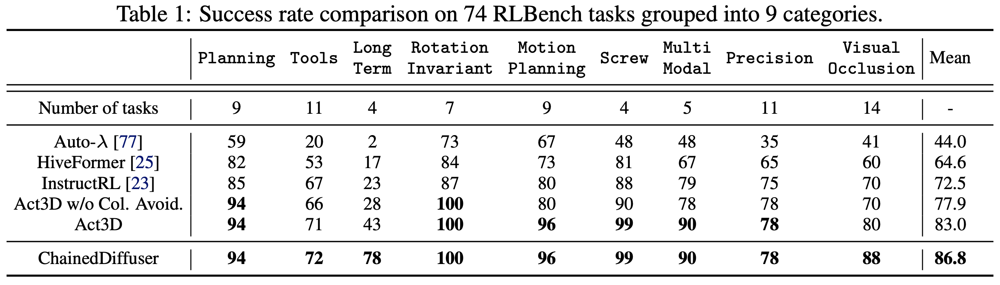
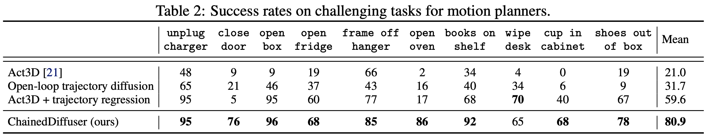

ChainedDiffuser

ChainedDiffuser is a robot manipulation policy architecture that predicts a set of robot keyposes and links them using predicted trajectory segments. It featurizes input multi-view images using pre-trained 2D image backbones and lifts the resulting 2D feature maps to 3D using sensed depth. In (b) we visualize the 3D feature cloud using PCA and keeping the 3 principal components, mapping them to RGB. The model then predicts end-effector keyposes using coarse-to-fine attention operations to estimate a 3D action map for the end-effector’s 3D location and regress the robot’s 3D orientation, similar to [21] (d). It then links the current end-effector pose to the predicted one with a trajectory predicted using a diffusion model conditioned on the 3D scene feature cloud and predicted keypose (e).
Results
ChainedDiffuser sets a new record on 74 tasks in RLBench, a well-established manipulation benchmark, and significantly outperforms prior SOTA methods on those previously challenging tasks.
 